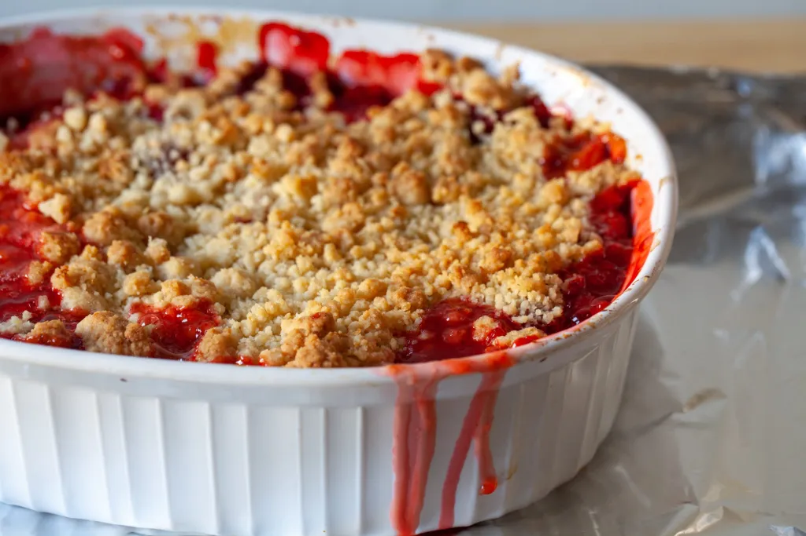

Strawberry Rhubarb Crisp

Based on a recipe by Michelle Davis, 2024 (Allrecipes)
Description
This highly addictive treat tempers the savage bite of rhubarb with sweet juicy strawberries, and enough sugar to
put an elephant to sleep. A crisp oat topping ensures that the drooling masses will keep coming back for more.
Ingredients
Fruit layer:
- 3 cups sliced fresh strawberries
- 3 cups diced rhubarb
- 1 cup white sugar
- 3 tablespoons all-purpose flour
Crunch Topping:
- 1 ½ cups all-purpose flour
- 1 cup packed brown sugar
- 1 cup rolled oats
- 1 cup butter
Steps
- Preheat the oven to 375 degrees F (190 degrees C).
- To make the fruit layer:
Mix strawberries, rhubarb, white sugar, and flour together in a large bowl.
Place the mixture in a 9x13-inch baking dish.
- To make the topping:
Combine 1 ½ cups flour, brown sugar, oats, and butter and mix until crumbly.
You may want to use a pastry cutter for this.
Sprinkle on top of the rhubarb and strawberry layer.
- Bake in the preheated oven until crisp and lightly browned, about 45 minutes.
- Enjoy!